MÓDULO PROJETOS
O objetivo deste módulo é cadastrar as obras e construções executadas no município, permitindo gerar as informações conforme o cumprimento da determinação legal contida no art. 50 da Lei nº 8.212/91, regulamentado pelo Decreto nº 3.048/99, de enviar, até o dia 10 do mês subseqüente, do Relatório Mensal de Alvará e Habite-se, expedidos no mês, para o INSS através do programa SISOBRANET.
Para a instalação do programa SISOBRANET, a prefeitura deve entrar em contato com a agência do INSS no município.
O módulo permite o cadastramento de obras de construção civil, emissão de alvará, de habite-se e do relatório mensal desses documentos.
Nesse menu são cadastradas as obras do sistema para controle das obras no município, permitindo controlar as obras regulares e irregulares.
No cadastro de obras, o usuário preenche os dados do responsável e da construção de acordo com o layout do INSS para o arquivo de envio das informações.
Descrição dos campos e modelo do formulário conforme figura abaixo.
Obra Regular: Verificar no cadastro de matricula se está regular e escolher Sim, depois clicar no botão incluir conforme a Figura 01.
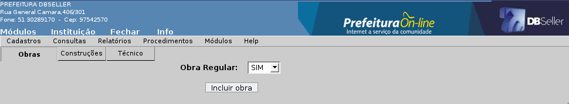
Figura
01
ABA OBRAS
Descrição dos campos e modelo conforme de tela a Figura 02 abaixo.
Código: O campo é gerado automático.
Descrição: Preencher o nome da obra, obrigatório.
Tipo de Responsável: Preencher o código da opção conforme padrão do INSS.
Proprietário da Obra: Preencher o código de CGM do proprietário da Obra ou clicar no link para pesquisar. O proprietário do imóvel é muito importante por ele ser o responsável legal pela obra de construção civil, em relação aos impostos e taxas municipais e das contribuições previdenciárias dos seus trabalhadores.
Lote: Preencher o código reduzido do Lote para buscar (setor - quadra - lote) ou clicar no link para pesquisar.
Responsável da Obra: Preencher o código do CGM do responsável pela execução e andamento da obra ou clicar no link para pesquisar.
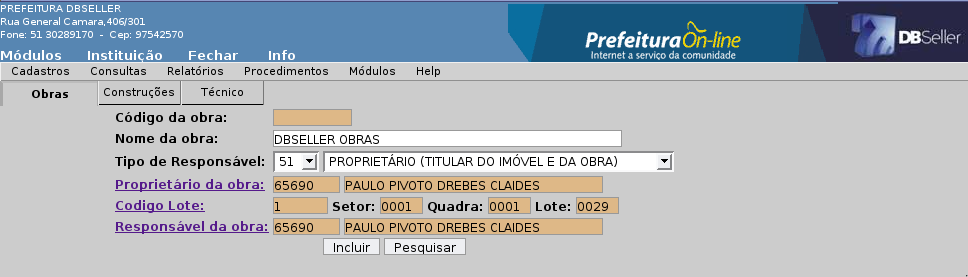
Figura
02
ABA CONSTRUÇÕES
Descrição dos campos e modelo de tela conforme a Figura 03 abaixo.
Código Obra: O campo é gerado automático.
Código: O campo código da construção é gerado automático.
Área: Preencher a área da construção conforme informada no projeto. O campo Área é obrigatório quando a obra for: Demolição, Acréscimo ou Reforma. A Construção Nova é compatível com Demolição desde que a área demolida seja igual a área existente.
Ocupação: Escolher uma ocupação para obra (Comercial, Residencial ou Mista). Essa opção é fixa no sistema padrão do INSS.
Tipo de Construção: Escolher um Tipo de Construção (Alvenaria, Madeira e Mista). Essa opção é fixa no sistema padrão do INSS.
Tipo de Lançamento: Escolher um Tipo de Lançamento (Nova, Demolição, Ampliação ou Reforma). Essa opção é fixa no sistema padrão do INSS.
Logradouro: Preencher o código do Logradouro ou clicar no link para pesquisar.
Número: Preencher o número da matricula.
Complemento: Preencher o complemento (casa, sala, apartamento, prédio).
Bairro: Preencher o código do bairro ou clicar no link para pesquisar.
Área Atual: Nesse campo se a obra estiver regular, o sistema busca a área cadastrada no lote.
Unidades: Preencher o número de unidades (construções) referente a obra.
Pavimentos: Preencher a quantidade de pavimentos da obra (1º, 2º, 3º andares).
Data Inicial: Preencher a data inicial da obra. Data Final: Preencher a data final da obra.
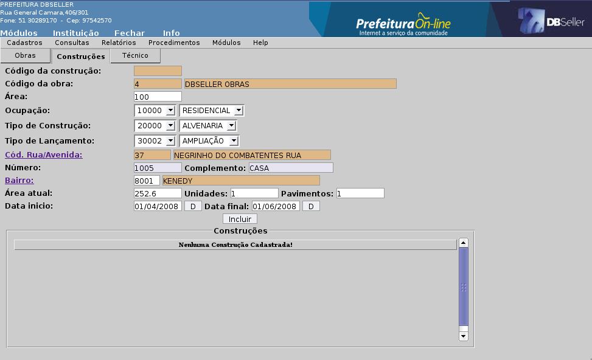
Figura
03
ABA TÉCNICO
Descrição dos campos e modelo de tela conforme a Figura 04.
Código Obra: O campo é gerado automático.
Técnico: Preencher o código do CGM do técnico responsável pela obra (Engenheiro, Arquiteto) ou clicar no link para pesquisar. O sistema busca automático o CGM do responsável pela obra.
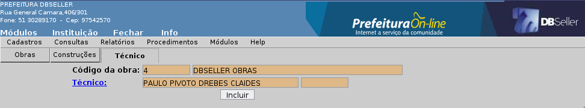
Figura
04
Permite alterações nos campos que não estão bloqueados pelo sistema.
Não permitir a exclusão de uma obra que tem Alvará e habite-se vinculada.
É cadastrado o técnico que é o responsável técnico pelo obra. Deve ser um profissional da área com registro no CREA (Engenheiro e Arquiteto). Descrição dos campos e modelo de tela conforme Figura 05.
CGM: Preencher o código do CGM do técnico responsável pela obra (Engenheiro, Arquiteto) ou clicar no link para pesquisar.
CREA: Preencher o código do técnico no CREA (Conselho Regional de Engenharia e Arquitetura).
Figura
05
Permite alteração no campo CREA e clicar em alterar.
Permite a exclusão, quando o técnico não estiver vinculado a nenhuma obra do sistema.
Nesse menu é cadastrado de acordo com os tipos referentes ao INSS, deve ser padrão por que será gerado um arquivo para o INSS com esses dados, não permitindo alteração e exclusão.
Os tipos padrão são: Proprietário (titular do imóvel e da obra), Incorporadora (abrangida pela Lei nº 4.591/64), Dono (da obra - não titular do imóvel). Ex: Um locatário que está executando uma obra no terreno de outra e a Construtora (Com registro no CREA).
Descrição dos campos e modelo de tela conforme Figura 06.
Código: O campo é gerado automático.
Descrição: Preencher o nome do Tipo de Responsável. Obs: Deve ser cadastrado só quando o INSS criar tipos novos. Essa opção é fixa no sistema como padrão do INSS.
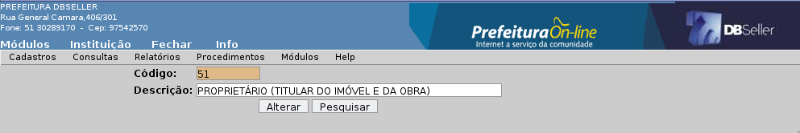
Figura
06
Esse menu gera uma consulta com todos os dados da obra no sistema e mostra se possui construção e alvará para essa obra.
Na consulta busca uma tela de pesquisa com as obras do sistema.
Descrição dos campos e modelo conforme Figura 07 e Figura 08.
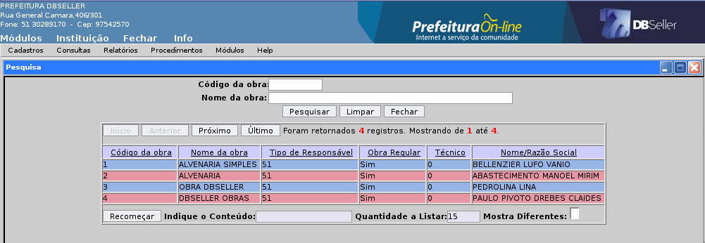
Figura
07
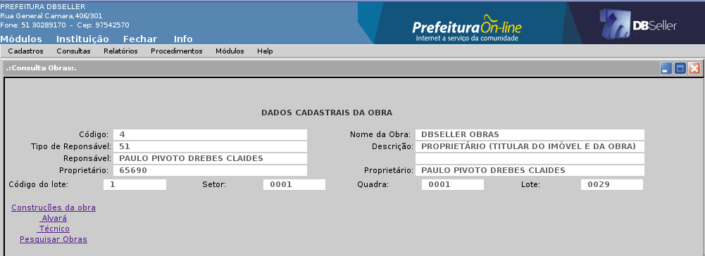
Figura
08
Emite a carta de Alvará para anexar a documentação da Obra. Para emitir a carta de Alvará deve ser configurado nos textos alvará.
Descrição dos campos e modelo conforme Figura 09.
Obra: Preencher o código da Obra ou clicar no link para pesquisar.
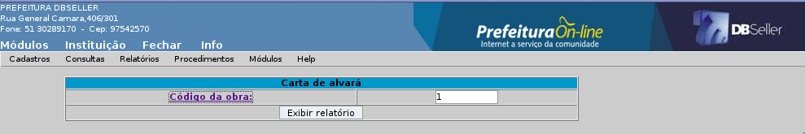
Figura
09
Na Figura 10 mostra um modelo da Carta de Alvará no DBPortal.
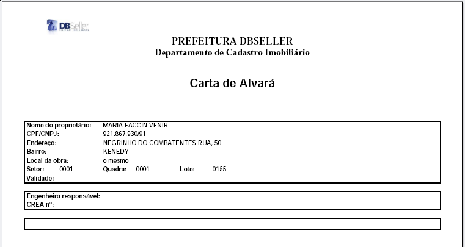
Figura
10
Emite a carta de Habite-se para anexar a documentação da Obra. Para emissão da carta precisa ser vinculado ao documento padrão 1021. Descrição dos campos e modelo conforme Figura 11.
Habite-se: Preencher o código da Obra ou clicar no link para pesquisar.
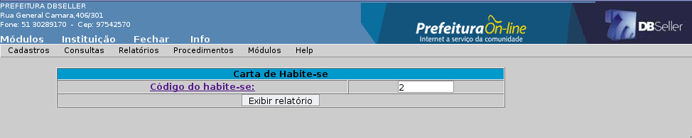
Figura
11
Na Figura 12 mostra um modelo da Carta de Habite-se no DBPortal.
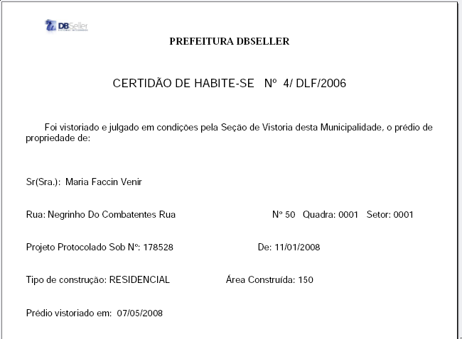
Figura
12
Emite um relatório com os dados gerais do cadastro de obras do sistema, um dos mais importantes desse módulo.
Descrição dos campos e modelo das Figuras 12 – 13 – 14 – 15 abaixo.
ABA Proprietário
Opções: Permite selecionar se quer emitir os dados selecionados no campo Proprietários.
Proprietários: Preencher o código do proprietário ou clicar no link para pesquisar.
Período da Construção: Preencher a data inicial e final da construção.
Obra: Permite selecionar o tipo da obra como (Todas, Regulares ou Irregulares).
Alvará: Permite selecionar as obras com alvará como (Todas, com Alvará ou sem Alvará).
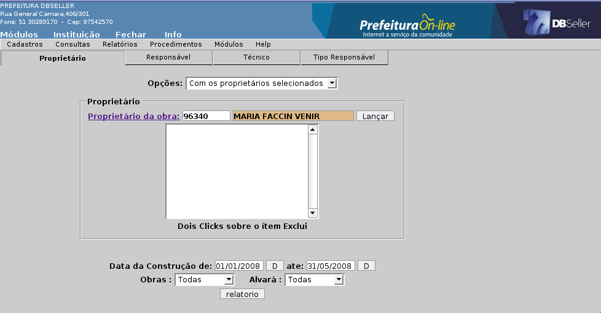
Figura
12
ABA Responsável
Opções: Permite selecionar se quer emitir os dados selecionados no campo Responsáveis.
Responsáveis: Preencher o código do responsável ou clicar no link para pesquisar.
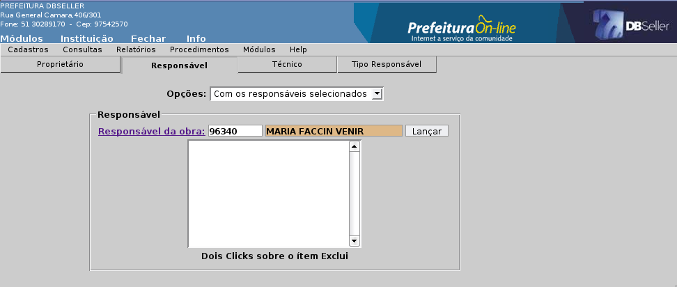
Figura
13
ABA Técnico
Opções: Permite selecionar se quer emitir os dados selecionados no campo Técnico.
Técnico: Preencher o código do técnico ou clicar no link para pesquisar.
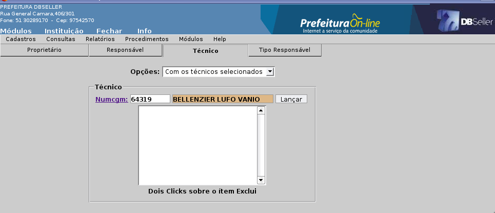
Figura
14
ABA Tipo de Responsável
Opções: Permite selecionar se quer emitir os dados selecionados no campo Tipo de Responsável.
Responsável: Colocar o código do tipo de responsável ou clicar no link para pesquisar.
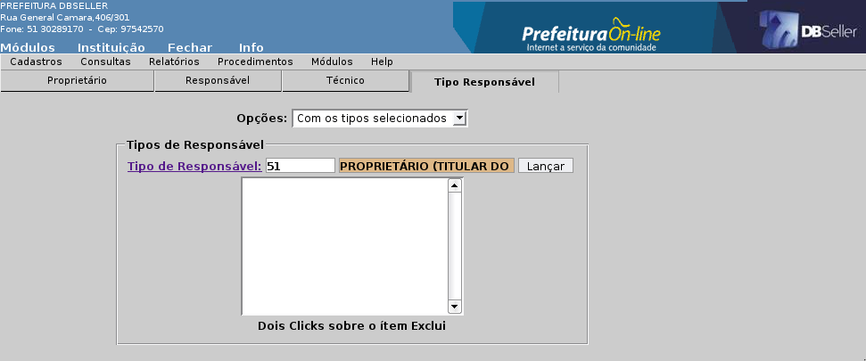
Figura
15
Emite um relatório com os dados referente as obras e o alvará vinculado aquela obra. Gera um relatório analítico das obras com alvará, por data de emissão ou código de obra. Descrição dos campos e modelo de tela conforme Figura 16.
Intervalo de Obras: Preencher o código da obra nos campos dos intervalos. Ex ( 1 - 10).
Data de Emissão: Preencher a data inicial e final da emissão do alvará.
Código da Obra: Lançar a obra se o campo Opção estiver com (Selecionados).
Seleção: Obra ou Data de Emissão.
Opção: Selecionados ou não selecionados.
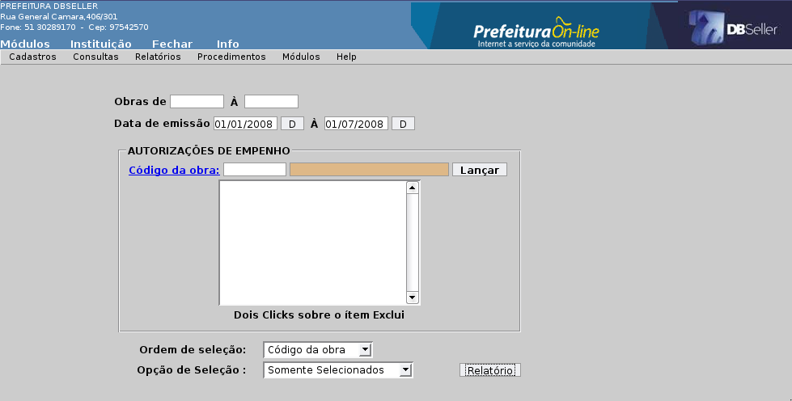
Figura
16
Na Figura 17 mostra um modelo de um relatório Obra e Alvará no DBPortal.
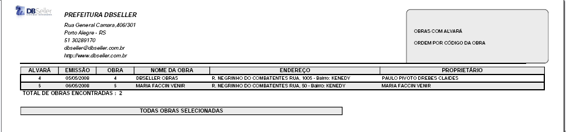
Figura
17
Emite um relatório analítico das obras e construções permitindo o usuário gerenciar por período todas as obras com construções do sistema.
Descrição dos campos, ABA e modelo de tela conforme Figuras 18 – 19 – 20 – 21 – 22 .
ABA Ocupação
Opções: Permite selecionar se quer emitir os dados selecionados no campo Ocupação.
Ocupação: Preencher o código da ocupação ou clicar no link para pesquisar.
Intervalo Unidade: Preencher o intervalo inicial e final da unidade.
Intervalo Pavimento: Preencher o intervalo inicial e final do Pavimento.
Intervalo Área: Preencher o intervalo inicial e final da Área.
Data da Obra: Preencher a data inicial e final da obra.
Habite-se: Permite selecionar as obras com habite-se como (Todo, com Habite-se ou sem Habite-se).
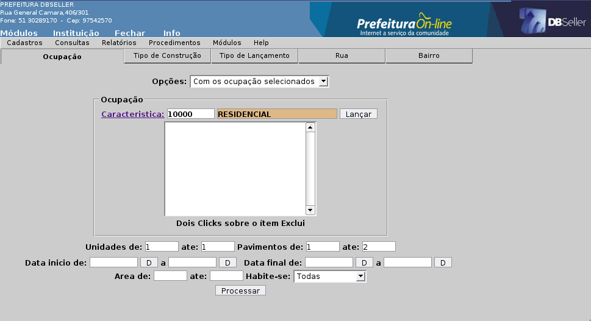
Figura
18
ABA Tipo de Construção
Opções: Permite selecionar se quer emitir os dados selecionados no campo Característica.
Característica: Preencher o código do tipo de construção ou clicar no link para pesquisar.
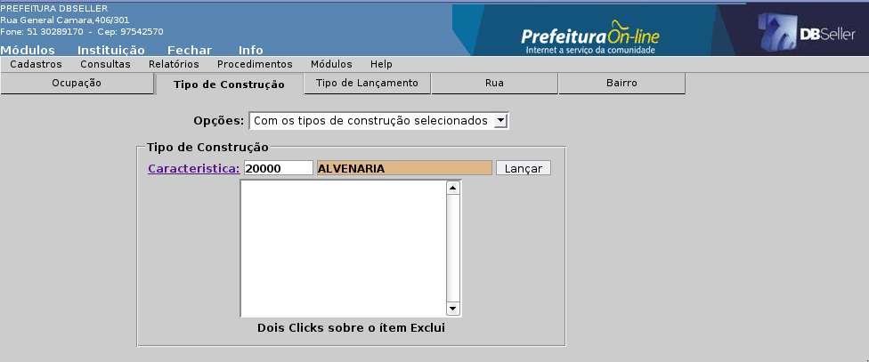
Figura
19
ABA Tipo de Lançamento
Opções: Permite selecionar se quer emitir os dados selecionados no campo Característica.
Características: Preencher o código do tipo de lançamento ou clicar no link para pesquisar.
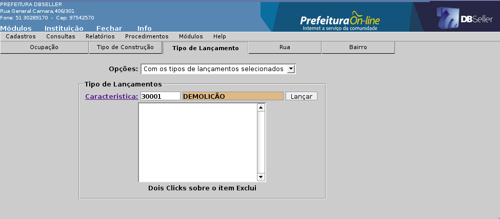
Figura
20
ABA Rua
Opções: Permite selecionar se quer emitir os dados selecionados no campo Rua.
Rua: Colocar o código do rua ou clicar no link para pesquisar.
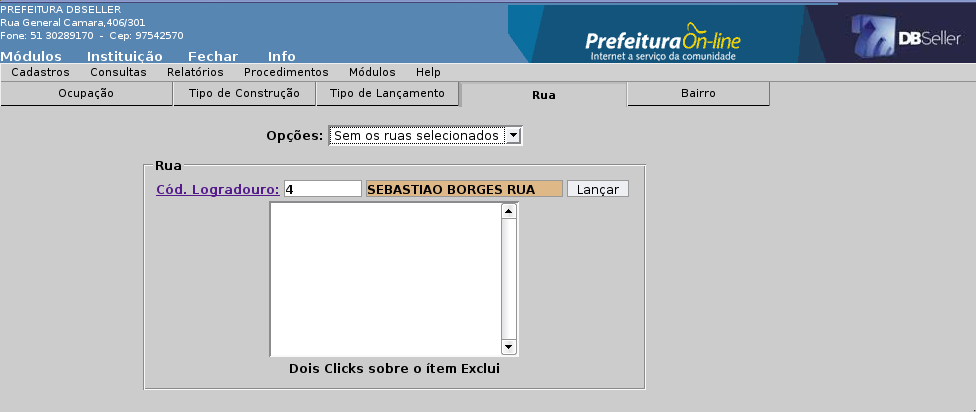
Figura
21
ABA Bairro
Opções: Permite selecionar se quer emitir os dados selecionados no campo Bairro.
Bairro: Preencher o código do bairro ou clicar no link para pesquisar.
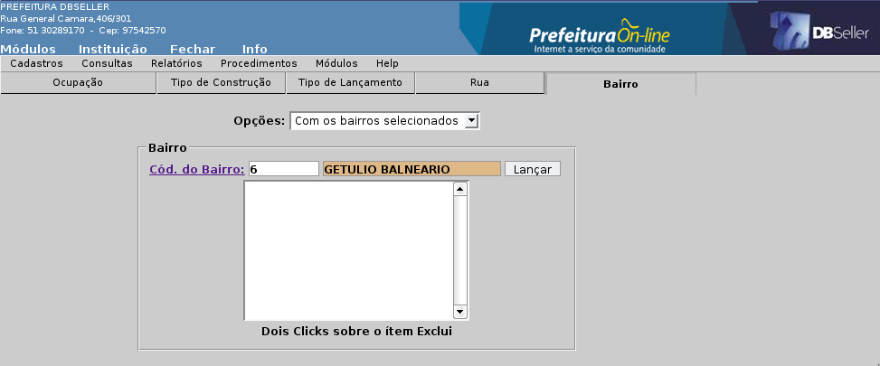
Figura
22
Na Figura 23 mostra um modelo de um relatório Obra e Construção no DBPortal.
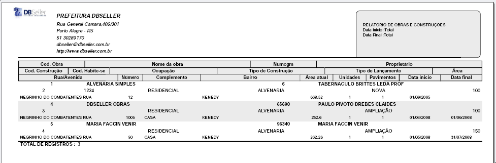
Figura
23
Emite um relatório das construções que possuem habite-se mo sistema buscando pela data de cadastro da construção no sistema. Descrição dos campos e modelo de tela conforme Figura 24.
Período: Preencher a data inicial e final do Habite-se.
Intervalo de Área: Preencher o intervalo inicial e final da Área.
Habite-se: Permite selecionar as construções que possuem habite-se com (Todos, Parcial e Total).
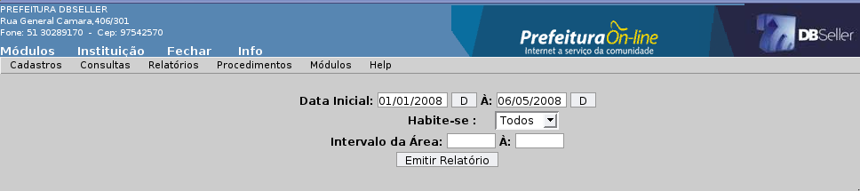
Figura
24
Na Figura 25 mostra um modelo de um relatório Construção e Habite-se no sistema.
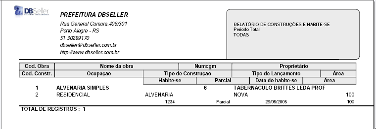
Figura
25
Nesse procedimento é cadastrado o alvará para uma obra, gerando a liberação da obra no sistema podendo emitir a carta de alvará para execução da obra.
Descrição dos campos e modelo de tela conforme Figura 26.
Obras: Preencher o código da obra ou clicar no link para pesquisar.
Alvará: O campo com o código do Alvará é gerado automático.
Data: Preencher a data de expedição do alvará para obra.
Número da Construção: Pesquisar as construções da obra que vai expedir o alvará.
Figura
26
Permite a alteração no campo: Data. Mas deve ser reemitido o Alvará novamente.
Não pode ser excluído o cadastro de alvará quando for emitido a carta de alvará ou quando houver habite-se cadastrado para a construção.
Nesse procedimento é cadastro o habite-se para as construções, mas pode ser cadastrada apenas para aqueles que tiverem alvará cadastrados. O habite-se é um documento de liberação para a construção. Descrição dos campos e modelo conforme Figura 27.
Código: O campo com o código de habite-se é gerado automático.
Construção: Preencher o código da construção ou clicar no link para pesquisar.
Processo: Preencher o código do processo ou clicar no link para pesquisar.
Descrição: Preencher o nome do habite-se.
Parcial: Permite liberar um habite-se com área parcial ou com área total.
Data: Preencher a data da inclusão do habite-se.
Área: Preencher a área de acordo com o campo parcial ou total.
Observações: Preencher observações sobre o habite-se que foi cadastrado.
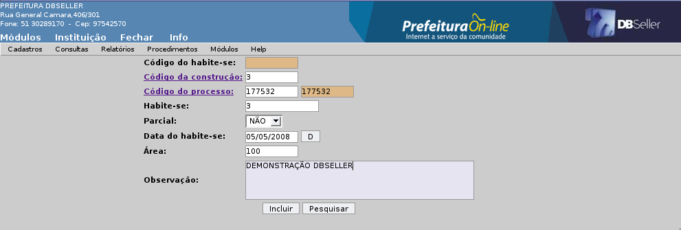
Figura
27
Pode ser alterado o (s) campo(s): Processo, Descrição, Parcial, Data, Área e Observações. Mas deve ser reemitido o Habite-se depois da alteração do cadastro.
Não pode ser excluído o habite-se que foi emitido uma carta de habites-se.
Nesse menu é executado os procedimentos sobre o arquivo de remessa das informações do INSS através do programa SisobraNet. O município que possuir sistema próprio de cadastramento de obras e emissão de alvará e habite-se, não precisará adotar o sistema SisobraPref, mas terá, obrigatoriamente que adequar-se às especificações mínimas exigidas pelo INSS, na geração do arquivo com o relatório de alvará e habite-se, para tornar possível o envio desse relatório, pela internet, utilizando o SisobraNet.
Nesse menu gera os arquivos para o INSS sobre as obras referente ao município. Permite regerar os arquivos já gerados e enviados. Para gerar um novo deve ser informado os período que será gerado o arquivo clicar no botão verificar para criar um arquivo .txt, para depois fazer a verificação dos dados. No botão gerar ele cria um arquivo .txt para envio não permitindo gerar ele novamente.
Descrição dos campos e modelo de tela conforme Figura 28.
Arquivos Gerados e Enviados: Este campo mostra todos os arquivos que foram gerados e enviados para o INSS. Possui um botão que reenvia o arquivo selecionando novamente.
Período: Colocar a data inicial e final das obras para geração de um arquivo dentro desse período.
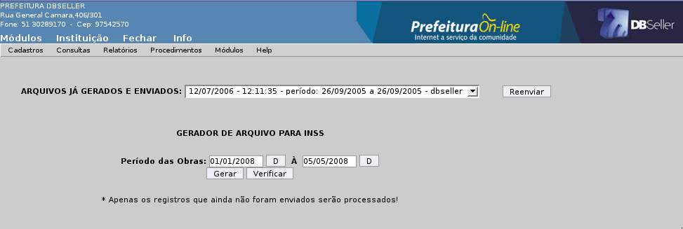
Figura
28
Nesse menu faz a exclusão do arquivo .txt na pasta que ele está gravado, habilitando o menu Gera Arquivo para gerar o arquivo novamente. Descrição dos campos e modelo de tela conforme Figura 29.
Código: Preencher o código do arquivo ou clicar no link para pesquisar.
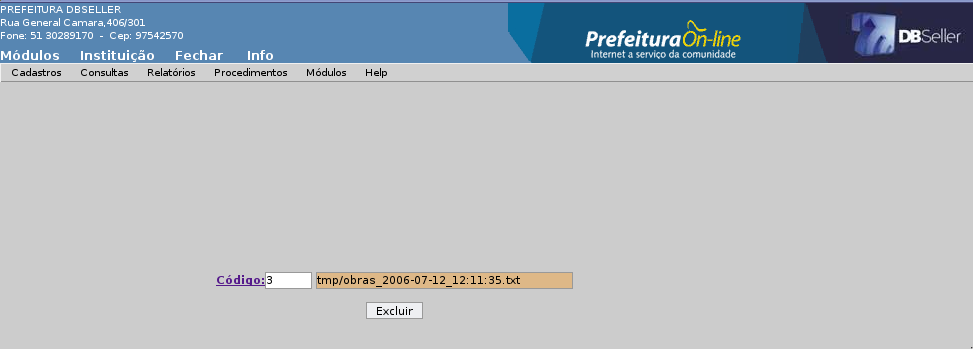
Figura
29
Nesse menu é cadastrado os parágrafos dos documentos de Alvará e Habite-se do sistema para emissão da Carta de Habite-se e Alvará.
Nesse menu são cadastrados os textos que serão impresso no Alvará como: Cabeçalho, Termo Parágrafo 1, Assinatura 1, Assinatura 2, Rodapé.
Nesse menu são cadastrados os textos que serão impresso no Habite-se como: Cabeçalho, Termo Parágrafo 1, Termo – Parágrafo 2, Assinatura.
Nesse menu é configurado os parâmetros do módulo Projetos para o preenchimento das obras no sistema.
Esse menu define quais os itens que serão mostrados no cadastro de construções no campo Ocupação. Deve ser cadastrado as características desejadas para os tipos de ocupação e estas serem ligadas a um grupo padrão do INSS. Descrição dos campos e modelo de tela conforme Figura 30.
Grupo Ocupação: Preencher o código do grupo de ocupação ou clicar no link para pesquisar.
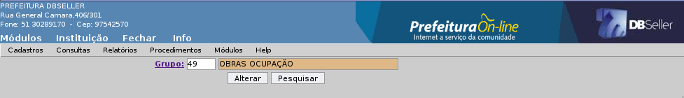
Figura
30
Este meu define quais os itens que serão mostrados no cadastro de construções no campo Tipo de Construção. Deve ser cadastrado as características desejadas para os tipos de construção e estas serem ligadas a um grupo padrão do INSS. Descrição dos campos e modelo de tela conforme Figura 31.
Grupo Tipo de Construção: Preencher o código do Grupo Tipo de Construção ou clicar no link para pesquisar.
Figura
31
Esse meu define quais os itens que serão mostrados no cadastro de construções no campo “Tipo de Lançamento”. Deve ser cadastrado as características desejadas para os Tipos de Lançamento e estas serem ligadas a um grupo, que será aqui indicado como padrão do Tipo de Lançamento. Descrição dos campos e modelo de tela conforme Figura 32.
Grupo Tipo de Lançamento: Preencher o código da Grupo Tipo de Lançamento ou clicar no link para pesquisar.
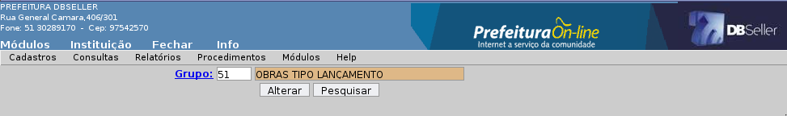
Figura
32
ANOTAÇÕES
ANOTAÇÕES
|
DBSeller Serviços de Informática Ltda. – www.dbseller.com.br Rua General Câmara, 406/301 - Porto Alegre/RS - Fone: (51) 3076-5101 |
|